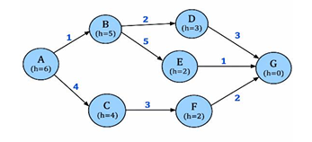
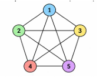
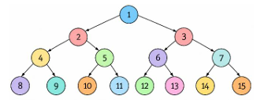
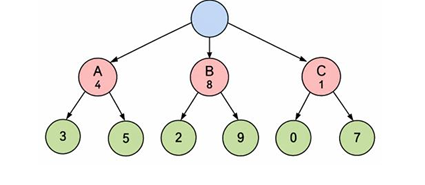
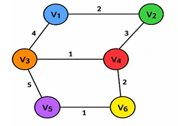
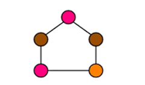
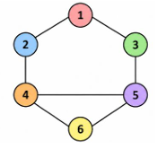

Question: Write a program to implement Breadth First Search (BFS) for the Monkey Banana Problem.
from collections import deque # Using Queue (deque) for BFS
# Put start state in queue
queue = deque(["Monkey at Door"])
visited = set() # Visited set to avoid infinite loops
while queue: # While queue is not empty
state = queue.popleft() # Remove first element from queue
if state in visited:
continue # Skip if already visited
visited.add(state) # Mark this state as visited
print(state)
# Next transitions (Next steps)
if state == "Monkey at Door":
queue.append("Monkey at Box") # Moved from door to box
elif state == "Monkey at Box":
queue.append("Box Under Banana") # Moved box under banana
elif state == "Box Under Banana":
queue.append("Monkey Climbs Box") # Climbed on box
elif state == "Monkey Climbs Box":
queue.append("Monkey Gets Banana") # Got banana
elif state == "Monkey Gets Banana":
print("Goal: Banana Obtained!") # Goal achieved!
break
Monkey at Door
Monkey at Box
Box Under Banana
Monkey Climbs Box
Monkey Gets Banana
Goal: Banana Obtained!Question: Write a program to implement the A* Search Algorithm to find the shortest path between a source node and a destination node.

import heapq # Priority Queue (heap) is required for A* search
graph = {
'A': {'B': 1, 'C': 4}, # Can go from A to B(cost 1) and C(cost 4)
'B': {'D': 2, 'E': 5},
'C': {'F': 3},
'D': {'G': 3},
'E': {'G': 1},
'F': {'G': 2},
'G': {} # G is the goal, no path forward from there
}
# Heuristic values (h) mean the estimated cost to reach the goal
h = {
'A': 6, 'B': 5, 'C': 4, 'D': 3, 'E': 2, 'F': 2, 'G': 0
}
def a_star(start, goal):
# Storing (f, g, current_node, path_travelled) in queue
queue = [(h[start], 0, start, [start])]
visited = set() # To track visited nodes
while queue:
# Heappop nehmich sarvat kamin 'f' value aslela node baher kadhto (Shortest estimated path)
f, g, node, path = heapq.heappop(queue)
if node in visited:
continue # Skip if node is already visited
visited.add(node)
print("Visiting:", node)
if node == goal: # If we reached the goal
print("\nShortest Path:", " -> ".join(path))
print("Total Cost:", g)
return
# Check neighbor nodes (Check neighbors)
for neighbour, cost in graph[node].items():
new_g = g + cost # Actual cost from start to neighbor
new_f = new_g + h[neighbour] # f = g + h formula!
# Push new path and cost to queue
heapq.heappush(queue, (new_f, new_g, neighbour, path + [neighbour]))
a_star('A', 'G')
Path: ['A', 'B', 'D', 'G']
Cost: 6Question: Write a program to implement Breadth First Search (BFS) for the Water Jug Problem.
from collections import deque # Double ended queue for BFS
def water_jug():
visited = set() # To keep track of visited states (x,y)
# Storing ((jug4, jug3), path) in queue
queue = deque([((0, 0), [(0, 0)])])
while queue:
(x, y), path = queue.popleft() # Pop current state and path
if (x, y) in visited: continue # Skip if state already seen
visited.add((x, y)) # Mark state as visited
# Goal condition: Any one jug must have 2 Liters of water
if x == 2 or y == 2:
print("Solution Path:")
for state in path: print(state)
return
# Apply all possible actions (All possible next states)
states = [
(4, y), # Fill 4L jug (Fill 4L)
(x, 3), # Fill 3L jug (Fill 3L)
(0, y), # Empty 4L jug (Empty 4L)
(x, 0), # Empty 3L jug (Empty 3L)
# 3L jug madhun 4L madhe ota, jo paryant to full hot nahi (Pour 3L -> 4L)
(max(0, x - (3 - y)), min(3, x + y)),
# 4L jug madhun 3L madhe ota, jo paryant to full hot nahi (Pour 4L -> 3L)
(min(4, x + y), max(0, y - (4 - x)))
]
# Add new states to queue
for s in states:
if s not in visited:
queue.append((s, path + [s]))
water_jug()
Solution Path:
(0, 0)
(0, 3)
(3, 0)
(3, 3)
(4, 2)Question: Write a program to implement the Backtracking Algorithm for solving a constraint satisfaction problem (Graph Coloring).

# Graph: Which node is connected to which other node
graph = {
1: [2, 3, 4, 5],
2: [1, 3, 4, 5],
3: [1, 2, 4, 5],
4: [1, 2, 3, 5],
5: [1, 2, 3, 4]
}
nodes = [1, 2, 3, 4, 5] # Nodes to color
available_colors = ['Blue', 'Green', 'Yellow', 'Red', 'Purple'] # Available colors
node_colors = {} # To store final answers (e.g., {1: 'Blue'})
def solve_csp(node_index):
# Base Case: Success when all 5 nodes are colored! (Success)
if node_index == len(nodes):
return True
current_node = nodes[node_index] # Which is the current node
# Try one color at a time (Try each color)
for color in available_colors:
print(f"Thinking: Trying {color} for Node {current_node}...")
# Check if neighbor node has been given the same color? (Check neighbor colors)
is_safe = True
for neighbor in graph[current_node]:
if neighbor in node_colors and node_colors[neighbor] == color:
is_safe = False # Conflict! Neighbor has the same color
print(f" -> Conflict! Cannot use {color} because neighbor Node {neighbor} is already {color}")
break
# If color is safe, assign it
if is_safe:
node_colors[current_node] = color
print(f" -> Success! Assigned {color} to Node {current_node}")
# Recursively move to next node (Move to NEXT node)
if solve_csp(node_index + 1) == True:
return True
# BACKTRACK: If dead end ahead, remove this color and try another
print(f" -> Backtracking: Removing {color} from Node {current_node}")
del node_colors[current_node]
# No color worked, backtrack (Return False to backtrack)
return False
if __name__ == "__main__":
print("Starting Backtracking Algorithm for CSP...")
print("-" * 50)
if solve_csp(0) == True:
print("-" * 50)
print("Final Solution Found!")
for node in nodes:
print(f"Node {node} is colored {node_colors[node]}")
else:
print("\nNo solution possible with the given colors.")
Starting Backtracking Algorithm for CSP...
--------------------------------------------------
Thinking: Trying Blue for Node 1...
-> Success! Assigned Blue to Node 1
Thinking: Trying Blue for Node 2...
-> Conflict! Cannot use Blue because neighbor Node 1 is already Blue
Thinking: Trying Green for Node 2...
-> Success! Assigned Green to Node 2
Thinking: Trying Blue for Node 3...
-> Conflict! Cannot use Blue because neighbor Node 1 is already Blue
Thinking: Trying Green for Node 3...
-> Conflict! Cannot use Green because neighbor Node 2 is already Green
Thinking: Trying Yellow for Node 3...
-> Success! Assigned Yellow to Node 3
Thinking: Trying Blue for Node 4...
-> Conflict! Cannot use Blue because neighbor Node 1 is already Blue
Thinking: Trying Green for Node 4...
-> Conflict! Cannot use Green because neighbor Node 2 is already Green
Thinking: Trying Yellow for Node 4...
-> Conflict! Cannot use Yellow because neighbor Node 3 is already Yellow
Thinking: Trying Red for Node 4...
-> Success! Assigned Red to Node 4
Thinking: Trying Blue for Node 5...
-> Conflict! Cannot use Blue because neighbor Node 1 is already Blue
Thinking: Trying Green for Node 5...
-> Conflict! Cannot use Green because neighbor Node 2 is already Green
Thinking: Trying Yellow for Node 5...
-> Conflict! Cannot use Yellow because neighbor Node 3 is already Yellow
Thinking: Trying Red for Node 5...
-> Conflict! Cannot use Red because neighbor Node 4 is already Red
Thinking: Trying Purple for Node 5...
-> Success! Assigned Purple to Node 5
--------------------------------------------------
Final Solution Found!
Node 1 is colored Blue
Node 2 is colored Green
Node 3 is colored Yellow
Node 4 is colored Red
Node 5 is colored PurpleQuestion: Write a program to implement Breadth First Search (BFS) traversal for a graph.

from collections import deque # Deque for queue (Double ended queue)
def bfs_traversal(graph, start_node):
queue = deque([start_node]) # Put root node in queue
visited = set([start_node]) # Mark root node as visited
traversal_order = [] # To store final answer path
print("Starting BFS Traversal...")
while queue: # While there are nodes in queue
current_node = queue.popleft() # Pop node from front of queue
traversal_order.append(current_node)
print(f"\nVisiting Node: {current_node}")
# Check all neighbors of current node
for neighbor in graph.get(current_node, []):
if neighbor not in visited: # If neighbor not visited
visited.add(neighbor) # Put it in visited
queue.append(neighbor) # Add to queue (For next level)
print(f" -> Discovered Node {neighbor}, adding to the queue.")
return traversal_order
# Graph dictionary: node -> [list of connected neighbors]
graph = {
1: [2, 3], 2: [4, 5], 3: [6, 7], 4: [8, 9], 5: [10, 11],
6: [12, 13], 7: [14, 15], 8: [], 9: [], 10: [], 11: [],
12: [], 13: [], 14: [], 15: []
}
print("=" * 50)
result = bfs_traversal(graph, 1)
print("=" * 50)
print("Final BFS Traversal Order:")
print(" -> ".join(map(str, result)))
==================================================
Starting BFS Traversal...
Visiting Node: 1
-> Discovered Node 2, adding to the queue.
-> Discovered Node 3, adding to the queue.
Visiting Node: 2
-> Discovered Node 4, adding to the queue.
-> Discovered Node 5, adding to the queue.
Visiting Node: 3
-> Discovered Node 6, adding to the queue.
-> Discovered Node 7, adding to the queue.
Visiting Node: 4
-> Discovered Node 8, adding to the queue.
-> Discovered Node 9, adding to the queue.
Visiting Node: 5
-> Discovered Node 10, adding to the queue.
-> Discovered Node 11, adding to the queue.
Visiting Node: 6
-> Discovered Node 12, adding to the queue.
-> Discovered Node 13, adding to the queue.
Visiting Node: 7
-> Discovered Node 14, adding to the queue.
-> Discovered Node 15, adding to the queue.
Visiting Node: 8
Visiting Node: 9
Visiting Node: 10
Visiting Node: 11
Visiting Node: 12
Visiting Node: 13
Visiting Node: 14
Visiting Node: 15
==================================================
Final BFS Traversal Order:
1 -> 2 -> 3 -> 4 -> 5 -> 6 -> 7 -> 8 -> 9 -> 10 -> 11 -> 12 -> 13 -> 14 -> 15Question: Write a program to implement Alpha-Beta Pruning for optimizing the Minimax search process.

import math
# node: current game node
# depth: how deep to go
# alpha: MAX player's best guaranteed value
# beta: MIN player's best guaranteed value
# maximizing: If True then MAX player, if False then MIN player
def alpha_beta(node, depth, alpha, beta, maximizing):
# Return value when at Leaf node (Base case)
if depth == 0:
return node
if maximizing: # MAX Player's turn
best = -math.inf # Keep best as -infinity initially
for child in node:
# Get values of child nodes
value = alpha_beta(child, depth - 1, alpha, beta, False)
best = max(best, value) # MAX wants the largest value
alpha = max(alpha, best) # Update Alpha
# Pruning condition (Cut next branches)
if alpha >= beta:
break # Beta (MIN) has fixed a smaller value, so ignore branch!
return best
else: # MIN Player's turn
best = math.inf # Keep best as +infinity initially
for child in node:
# Get values of child nodes
value = alpha_beta(child, depth - 1, alpha, beta, True)
best = min(best, value) # MIN wants the smallest value
beta = min(beta, best) # Update Beta
# Pruning condition (Cut next branches)
if alpha >= beta:
break # Alpha (MAX) has already guaranteed a larger value!
return best
# Game tree structure (Leaf values)
tree = [
[3, 5],
[2, 9],
[0, 7]
]
# Initially Root is MAX player
result = alpha_beta(tree, 2, -math.inf, math.inf, True)
print("Best value:", result)
Best value: 3Question: Write a program to implement the A* Search Algorithm to find the shortest path between a source node (V1) and a destination node (V6).

import heapq # heapq for Priority queue
graph = {
'V1': {'V2': 2, 'V3': 4}, # Can go from V1 to V2(2) and V3(4) with cost
'V2': {'V1': 2, 'V4': 3},
'V3': {'V1': 4, 'V4': 1, 'V5': 5},
'V4': {'V2': 3, 'V3': 1, 'V6': 2},
'V5': {'V3': 5, 'V6': 1},
'V6': {'V4': 2, 'V5': 1}
}
# Heuristic values (h): Estimated cost to reach V6 (Estimated cost to goal V6)
heuristic = {
'V1': 7, 'V2': 5, 'V3': 3, 'V4': 2, 'V5': 1, 'V6': 0
}
def astar(start, goal):
# Queue contains (f, g, current_node, path). Initially f = h[start], g = 0
queue = [(heuristic[start], 0, start, [start])]
visited = set()
while queue:
# Lowest 'f' value aslela path baher kadha
f, g, node, path = heapq.heappop(queue)
if node in visited:
continue # Skip if node already explored
visited.add(node)
print(f"Visiting {node} (Cost so far: {g})")
# Print path when goal is reached
if node == goal:
print("-" * 20)
print("Path:", " -> ".join(path))
print("Total Cost:", g)
return
# Go to neighbors (Check all neighbors)
for neighbour, cost in graph[node].items():
if neighbour not in visited:
new_g = g + cost # Cost from start to new node
new_f = new_g + heuristic[neighbour] # f = g + h formula
# Push new details to queue
heapq.heappush(queue, (new_f, new_g, neighbour, path + [neighbour]))
print("Starting A* Search...")
astar('V1', 'V6')
Starting A* Search...
Visiting V1 (Cost so far: 0)
Visiting V2 (Cost so far: 2)
Visiting V3 (Cost so far: 4)
Visiting V4 (Cost so far: 5)
Visiting V6 (Cost so far: 7)
--------------------
Path: V1 -> V2 -> V4 -> V6
Total Cost: 7Question: Write a program to solve the Map Coloring Problem using the Constraint Satisfaction Problem (CSP) approach.

# Graph: Konte regions (nodes) ekmekanna touch kartat
graph = {
1: [2, 5],
2: [1, 3],
3: [2, 4],
4: [3, 5],
5: [4, 1]
}
colors = ["Pink", "Brown", "Orange"] # Available colors
color = {} # Result store karnyasaathi {node: assigned_color}
def is_safe(node, c):
# Check kara ki ya node chya shejaryanna same color ahe ka? (Check neighbors)
for neighbour in graph[node]:
if neighbour in color and color[neighbour] == c:
return False # If same color, return False
return True # It's safe!
def solve(node):
# Base case: All nodes colored (Total 5 nodes)
if node > 5:
return True
# Try every color
for c in colors:
if is_safe(node, c): # If it is safe to assign color
color[node] = c # Assign color
# Move to next node (Recursion)
if solve(node + 1):
return True
# Remove color if problem arises (Backtracking!)
del color[node]
return False # Backtrack
if solve(1): # Start from node 1
print("Map Coloring Solution:")
for node in color:
print("Node", node, "=", color[node])
else:
print("No solution")
Map Coloring Solution:
Node 1 = Pink
Node 2 = Brown
Node 3 = Pink
Node 4 = Brown
Node 5 = BrownQuestion: Write a program to solve the 4-Puzzle problem using the A* Search Algorithm.
import heapq
goal = (1, 2, 3, 0) # Final goal state (0 represents empty space)
def heuristic(state):
# To calculate Manhattan distance
distance = 0
for i in range(4):
if state[i] != 0: # Ignore empty space
goal_pos = goal.index(state[i]) # Find position in target
# Row and Column distance
distance += abs(i//2 - goal_pos//2)
distance += abs(i%2 - goal_pos%2)
return distance
def neighbours(state):
result = []
zero = state.index(0) # Find position of 0
row, col = zero // 2, zero % 2 # Convert to Row and Column
moves = [(-1, 0), (1, 0), (0, -1), (0, 1)] # Up, Down, Left, Right
for dr, dc in moves:
nr, nc = row + dr, col + dc
if 0 <= nr < 2 and 0 <= nc < 2: # Check if new position is within grid
new_zero = nr * 2 + nc # New 1D index
new_state = list(state)
# Swap positions of 0 and number
new_state[zero], new_state[new_zero] = new_state[new_zero], new_state[zero]
result.append(tuple(new_state)) # Add valid neighbor state
return result
def astar(start):
# Queue: (f_score, g_score, current_state, path)
queue = [(heuristic(start), 0, start, [start])]
visited = set()
while queue:
f, g, state, path = heapq.heappop(queue) # Pop lowest f value
if state in visited: continue
visited.add(state)
if state == goal: # Goal reached!
print("Solution:")
for step in path: print(step)
return
# Generate neighbors and push to queue
for next_state in neighbours(state):
new_g = g + 1 # Move one step forward
new_f = new_g + heuristic(next_state) # f = g + h
heapq.heappush(queue, (new_f, new_g, next_state, path + [next_state]))
astar((1, 2, 0, 3)) # Start the puzzle
Solution:
(1, 2, 0, 3)
(1, 2, 3, 0)Question:Write a program or report that compares Minimax and Alpha-Beta Pruning on the same game tree.
import math
# Game tree structure
tree = {
'A': ['B', 'C'], 'B': ['D', 'E'], 'C': ['F', 'G'],
'D': 3, 'E': 5, 'F': 2, 'G': 9
}
def minimax(node, maximizing):
# Base case: If current node is leaf, return integer value directly
if isinstance(tree[node], int):
return tree[node]
# Recursively get values of children
values = [minimax(child, not maximizing) for child in tree[node]]
# MAX player wants highest value, MIN wants lowest
return max(values) if maximizing else min(values)
def alpha_beta(node, alpha, beta, maximizing):
# Base case: Return value of Leaf node
if isinstance(tree[node], int):
return tree[node]
if maximizing: # MAX player
value = -math.inf
for child in tree[node]:
value = max(value, alpha_beta(child, alpha, beta, False))
alpha = max(alpha, value)
if alpha >= beta: break # Pruning (Ignore branch)
return value
else: # MIN player
value = math.inf
for child in tree[node]:
value = min(value, alpha_beta(child, alpha, beta, True))
beta = min(beta, value)
if alpha >= beta: break # Pruning (Ignore branch)
return value
print("Minimax:", minimax('A', True))
print("Alpha-Beta:", alpha_beta('A', -math.inf, math.inf, True))
Minimax: 3
Alpha-Beta: 3Question: Write a program to implement the Backward Chaining inference mechanism.
# Base Facts
facts = {"rain"}
# Rules (If A then B)
rules = {
"wet_ground": ["rain"], # If rain, then wet_ground
"slippery": ["wet_ground"], # If wet_ground, then slippery
"dangerous": ["slippery"] # If slippery, then dangerous
}
def backward_chaining(goal):
# If goal is directly in facts, it is proven! (Base case)
if goal in facts:
return True
# If no rule exists for goal, it cannot be proven
if goal not in rules:
return False
# Check if conditions (e.g., slippery) are satisfied to prove goal
for condition in rules[goal]:
if backward_chaining(condition): # Go back recursively
facts.add(goal) # Add to facts once proven
return True
return False # Could not be proven
goal = "dangerous"
if backward_chaining(goal):
print("Goal proved:", goal)
else:
print("Goal cannot be proved")
Goal proved: dangerousQuestion: Write a program or report to compare Linear SVM and Non-Linear SVM (RBF Kernel). X = [ [1, 2], [2, 3], [3, 1], [4, 2], [5, 5], [6, 6], [7, 4], [8, 5] ] Y = [0, 0, 0, 0, 1, 1, 1, 1]
Note: You must install scikit-learn to run this code. Run: pip install scikit-learn in your terminal.
from sklearn.svm import SVC
# Training data (Features / X values)
X = [
[1, 2], [2, 3], [3, 1], [4, 2], # Group 0 (Category 0)
[5, 5], [6, 6], [7, 4], [8, 5] # Group 1 (Category 1)
]
# Labels (Answers / Y values)
Y = [0, 0, 0, 0, 1, 1, 1, 1]
# 1. Linear SVM (Separates by drawing a straight line)
linear_model = SVC(kernel='linear')
linear_model.fit(X, Y) # Train model
linear_prediction = linear_model.predict(X) # Check prediction
# 2. Non-Linear SVM using RBF Kernel (Separates by drawing a curved boundary)
rbf_model = SVC(kernel='rbf')
rbf_model.fit(X, Y) # Train model
rbf_prediction = rbf_model.predict(X) # Check prediction
# Display results
print("Actual Values: ", Y)
print("Linear SVM: ", linear_prediction)
print("RBF SVM: ", rbf_prediction)
# Accuracy means what percentage of answers are correct
print("\nLinear SVM Accuracy:", linear_model.score(X, Y))
print("RBF SVM Accuracy:", rbf_model.score(X, Y))
Actual Values: [0, 0, 0, 0, 1, 1, 1, 1]
Linear SVM: [0, 0, 0, 0, 1, 1, 1, 1]
RBF SVM: [0, 0, 0, 0, 1, 1, 1, 1]
Linear SVM Accuracy: 1.0
RBF SVM Accuracy: 1.0Question: Write a program to implement a Voting Classifier by combining multiple machine learning models such as Logistic Regression and Decision Tree.
Note: You must install scikit-learn to run this code. Run: pip install scikit-learn in your terminal.
from sklearn.datasets import load_iris
from sklearn.model_selection import train_test_split
from sklearn.linear_model import LogisticRegression
from sklearn.tree import DecisionTreeClassifier
from sklearn.ensemble import VotingClassifier
from sklearn.metrics import accuracy_score
# Load dataset (Iris dataset of flowers)
data = load_iris()
X = data.data # Features
Y = data.target # Labels
# Divide data into Train and Test (80% training, 20% testing)
X_train, X_test, Y_train, Y_test = train_test_split(
X, Y, test_size=0.2, random_state=42
)
# Create individual models
model1 = LogisticRegression(max_iter=200) # Model 1
model2 = DecisionTreeClassifier(random_state=42) # Model 2
# Voting Classifier (Combination of both models - Majority Vote)
voting_model = VotingClassifier(
estimators=[
('lr', model1),
('dt', model2)
],
voting='hard' # Hard voting means counting direct class votes
)
# Train Voting Classifier
voting_model.fit(X_train, Y_train)
# Get predictions on test data
prediction = voting_model.predict(X_test)
# Check model accuracy (Accuracy Score)
accuracy = accuracy_score(Y_test, prediction)
print("Predicted Values:", prediction)
print("Actual Values: ", Y_test)
print("Voting Classifier Accuracy:", accuracy)
Predicted Values: [1 0 2 1 1 0 1 2 1 2 0 1 2 0 0 1 2 1 1 2 0 2 0 2 2 2 2 2 0 0]
Actual Values: [1 0 2 1 1 0 1 2 1 2 0 1 2 0 0 1 2 1 1 2 0 2 0 2 2 2 2 2 0 0]
Voting Classifier Accuracy: 1.0Question: Write a program to solve a state-space search problem using DFS. Start vertex - 1.

# Graph representation (Where can we go from which node)
graph = {
1: [2, 3],
2: [1, 4],
3: [1, 5],
4: [2, 5, 6],
5: [3, 4, 6],
6: [4, 5]
}
def dfs_state_space(graph, start):
visited = set() # To keep track of visited nodes
stack = [start] # Using Stack for DFS (LIFO - Last In First Out)
traversal = [] # Final traversal path
print("Starting DFS State-Space Search...")
while stack: # While stack is not empty
node = stack.pop() # Pop node from top of stack
if node not in visited:
visited.add(node) # Mark as visited
traversal.append(str(node))
print(f"Visited: {node}")
# Reverse sort to visit nodes in numerical order
# (Last added to stack comes out first)
neighbors = sorted(graph[node], reverse=True)
for neighbor in neighbors:
if neighbor not in visited:
stack.append(neighbor) # Push neighbors to stack
print("-" * 30)
print("Final DFS Traversal Path:")
print(" -> ".join(traversal))
if __name__ == "__main__":
dfs_state_space(graph, 1)
Starting DFS State-Space Search...
Visited: 1
Visited: 2
Visited: 4
Visited: 5
Visited: 3
Visited: 6
------------------------------
Final DFS Traversal Path:
1 -> 2 -> 4 -> 5 -> 3 -> 6Question: Write a program to build a Knowledge Base using logical rules and facts.
# Knowledge Base using Facts and Rules
# Facts (Facts - Ex: this is a bird)
facts = {
"bird": True,
"has_feathers": True
}
# Rules (Rules - Ex: If it is a bird, then it can fly)
rules = {
"bird": "can_fly"
}
# Print facts
print("Facts in Knowledge Base:")
for fact in facts:
print("-", fact)
# Apply rule (Forward Chaining)
# If 'bird' is a fact, get its conclusion (can_fly) from rules
if "bird" in facts and facts["bird"] == True:
conclusion = rules["bird"]
print("\nApplying Rule:")
print("If bird then can_fly")
print("\nConclusion:")
print("The bird", conclusion)
Facts in Knowledge Base:
- bird
- has_feathers
Applying Rule:
If bird then can_fly
Conclusion:
The bird can_flyQuestion: Write a program to solve the 8-Puzzle problem using the A* Search Algorithm.
import heapq
goal = (1, 2, 3, 4, 5, 6, 7, 8, 0) # 0 represents blank tile
def heuristic(state):
# Manhattan Distance formula (To calculate h value)
distance = 0
for i in range(9):
value = state[i]
if value != 0: # Ignore blank space
goal_pos = goal.index(value) # What is the original final position of the tile?
# Add difference between current and goal row/col
distance += abs(i // 3 - goal_pos // 3)
distance += abs(i % 3 - goal_pos % 3)
return distance
def neighbours(state):
result = []
zero = state.index(0) # Find where 0 (Blank space) is
row, col = zero // 3, zero % 3 # Convert to row and column
moves = [(-1, 0), (1, 0), (0, -1), (0, 1)] # Up, Down, Left, Right
for dr, dc in moves:
nr, nc = row + dr, col + dc
if 0 <= nr < 3 and 0 <= nc < 3: # Check if inside the board
new_zero = nr * 3 + nc # Convert to 1D array index
new_state = list(state)
# Swap blank tile and neighbor tile
new_state[zero], new_state[new_zero] = new_state[new_zero], new_state[zero]
result.append(tuple(new_state)) # Valid neighbor path
return result
def astar(start):
# Queue contains (f, g, state, path)
queue = [(heuristic(start), 0, start, [start])]
visited = set()
while queue:
f, g, state, path = heapq.heappop(queue) # Pop node with lowest f score
if state in visited: continue
visited.add(state)
if state == goal: # Print path upon reaching goal
print("Solution:")
for step in path: print(step)
return
# Add all neighbor states to queue
for next_state in neighbours(state):
new_g = g + 1
new_f = new_g + heuristic(next_state) # f = g + h
heapq.heappush(queue, (new_f, new_g, next_state, path + [next_state]))
start = (1, 2, 3, 4, 0, 6, 7, 5, 8)
astar(start)
Solution:
(1, 2, 3, 4, 0, 6, 7, 5, 8)
(1, 2, 3, 4, 5, 6, 7, 0, 8)
(1, 2, 3, 4, 5, 6, 7, 8, 0)Question: Write a program to build a Convolutional Neural Network (CNN) for image recognition.(Orange vs Apple)
Note: You must install tensorflow to run this code. Run: pip install tensorflow in your terminal.
import tensorflow as tf
from tensorflow.keras import Sequential
from tensorflow.keras.layers import Conv2D, MaxPooling2D, Flatten, Dense
import warnings
warnings.filterwarnings("ignore")
# Using random simulated data as a placeholder for actual images
# (X_train is image pixels, Y_train is Orange(0) or Apple(1))
import numpy as np
X_train = np.random.rand(10, 128, 128, 3) # 10 dummy images of size 128x128 with 3 colors (RGB)
Y_train = np.random.randint(2, size=10) # 10 Labels (0 or 1)
X_test = np.random.rand(5, 128, 128, 3) # 5 test images
Y_test = np.random.randint(2, size=5)
# Defining CNN Model
model = Sequential([
# Step 1: Convolution Layer (Extracts lines, curves from Image)
Conv2D(32, (3, 3), activation="relu", input_shape=(128, 128, 3)),
# Step 2: Pooling Layer (Reduces image size but keeps same information)
MaxPooling2D(),
# Layer 2 for deep learning
Conv2D(64, (3, 3), activation="relu"),
MaxPooling2D(),
# Step 3: Flatten (Converts 2D matrix to 1D array so it can be fed to Dense layer)
Flatten(),
# Step 4: Fully Connected Neural Network
Dense(128, activation="relu"), # Hidden layer with 128 neurons
Dense(1, activation="sigmoid") # Final output (Sigmoid: > 0.5 is Apple, else Orange)
])
# Compile model (Set loss function and Optimizer)
model.compile(optimizer="adam", loss="binary_crossentropy", metrics=["accuracy"])
print("Training CNN Model...")
# Train model (Fit means learn pattern on data)
model.fit(X_train, Y_train, epochs=2, verbose=1)
print("\nEvaluating Model...")
# Test model on test data to check accuracy
loss, accuracy = model.evaluate(X_test, Y_test, verbose=0)
print("Test Accuracy:", round(accuracy, 2))
Training CNN Model...
Epoch 1/2
1/1 [==============================] - 1s 1s/step - loss: 0.6976 - accuracy: 0.5000
Epoch 2/2
1/1 [==============================] - 0s 120ms/step - loss: 14.2831 - accuracy: 0.4000
Evaluating Model...
Test Accuracy: 0.6